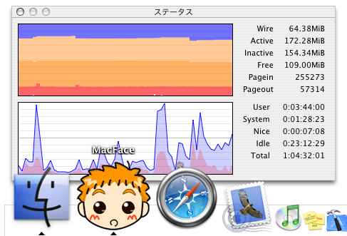
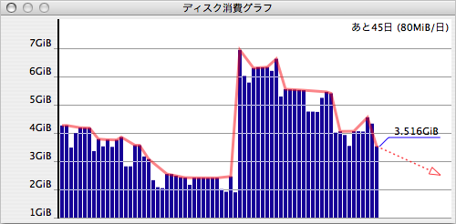
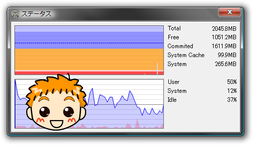
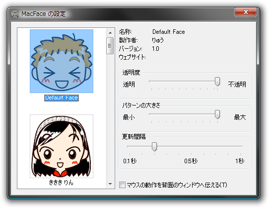

MacFaceは、CPUの使用率とメモリの使用状況を表示するアプリケーションです。Mac OS X版とWindows版があります。CPU使用率が高ければ高いほどご機嫌になっていき、メモリが足らなくなってくると表情が曇ってきます。表情のパターンは顔パターンファイルを変えることで変更することができます。ちなみにデフォルトの顔パターンは特に性別を設定していませんので、男の子でも女の子でも好きな方を想像してください。
MacFaceは以下の機能を持っています。
 
 
以下のものが使用できるWindows